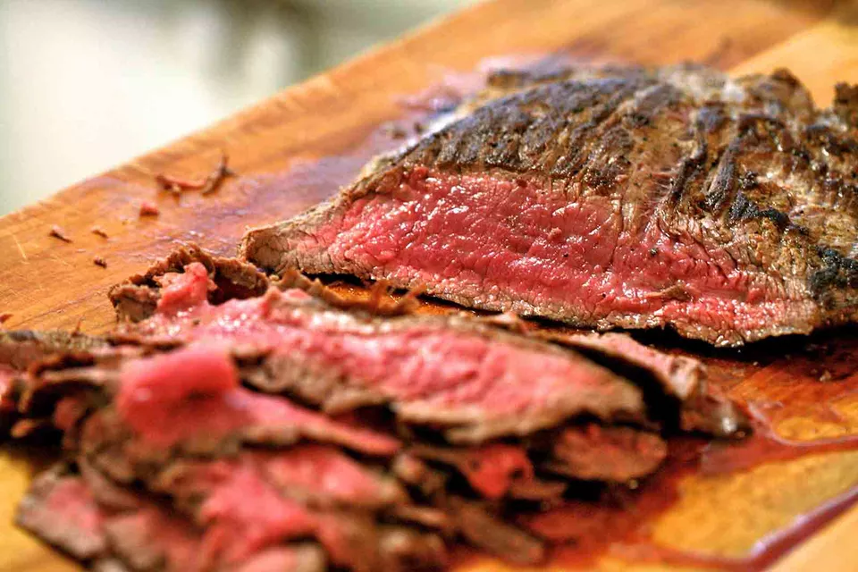

Flank Steak
Return to Homepage

Quick and Easy Pan-Fried Flank Steak
Yields 4 to 6 Servings
Ingredients:
- 1 1/2 pounds flank steak
- salt
- Freshly ground black pepper
- Dry mustard
- Softened butter
Directions
- Remove the steak from the refrigerator a half hour before cooking. Cut away any tough connective tissue on the surface of the steak.
- Using the tip of a sharp knife, poke small cuts into the meat, almost all the way through. The cuts should be at an angle, in the direction of the grain of the meat as the knife tip is going in. The cuts should be about an inch apart from each other. Turn the steak over and repeat the cuts on the other side. Make sure that the cuts you are making on this side are parallel with the cuts you made on the other side, otherwise you may cut across an existing cut and end up poking a hole through the meat.
- Sprinkle on side of th steak with salt and freshly ground pepper. Sprinkle the steak with dry mustard. (You can use regular mustard if you don't have any dry mustard.) Rub a tablespoon of butter all over the side of the steak. Turn the steak over and repeat with the dry mustard, pepper, and butter.
- Heat a large cast iron frying pan on high heat. Place steak in hot pan. Let sear for 2 to 3 minutes until well browned. Using tongs to lift up to see if nicely browned. If so, flip to the other side and let sear for 2 to 3 minutes.
- Remove the pan from the heat and let the steak continue to cook for 5 to 10 minutes in the residual heat of the pan (assuming you are using cast iron, if not, lower the heat to low).
- Use your finttips to check for doneness or insert a meat thermometer into the thickest part of the steak - 120 degrees F for very rare, 125 degrees F for rare, or 130 degrees F for medium rare. Flank steak should be served rare or medium rare, otherwise it may be too dry. If the steak isn't done enough to your liking, return the steak and pan to medium high heat for a few minutes.
- Remove the steak from the pan to a cutting board and let rest for 10 minutes, covered with aluminum foil.
- Cut the meat into very thin clices, at an angle, across the grain of th emeat. (This way you break through the tough long muscle fibers.)
- Any juices that come out of the meat while cutting or resting, return to the pan. Return the pan to a burner on high heat and deglaze the pan with a little water, scraping up any browned bits. Once the water has mostly boiled down, add a little butter to the pan for a nice sauce. Arrange the cut meat on a serving plate and pour the deglazed pan juices over the meat.
Return to Homepage